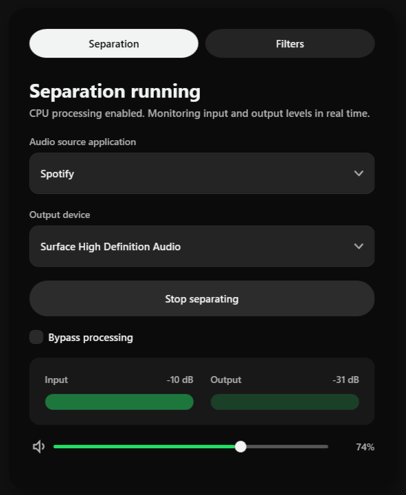
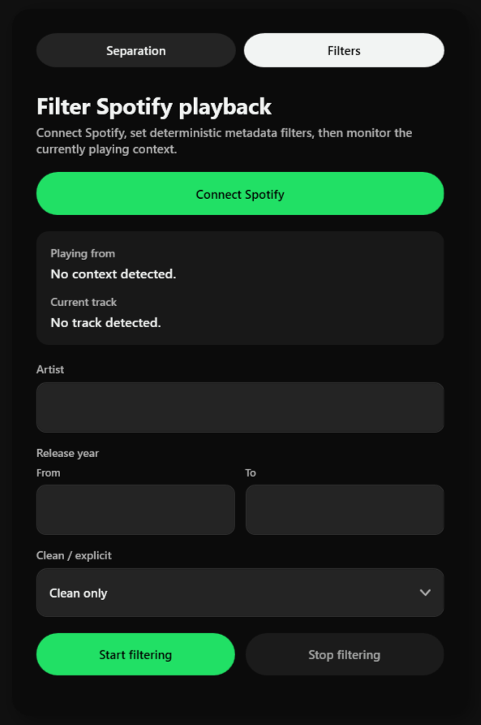

Last year, I attempted to create an app that would let me listen to an instrumental version of my playlist in real time, as seamlessly as possible. After a couple days, I was able to make a working prototype in Python, but I never took it further than that.
When I took part in Patch x OpenAI Young Builders Week this June, I decided to try again with a clearer plan and a better understanding of the problem.
I needed a way to get the music into the app, and away from the speakers. To do that, I used a software called VB-CABLE to create a virtual cable connecting Spotify and the app.
The app records the audio coming from the cable in seven-second chunks. Each chunk is added to a queue for processing, and the finished chunks are added back into the audio stream being sent to the speakers. This lets the app record, process, and play different chunks at the same time, keeping playback uninterrupted.
The traditional approach to vocal removal is called center channel cancellation. It works because vocals are often placed in the center of a song, making them similar in the left and right channels. In theory, that means the channels can be cancelled against each other to remove the vocals. I tried this first because it was fast and simple enough to run in real time, but it was too inconsistent. It only worked on certain songs, and even then the result was usually low quality.
The better option was to use an AI stem splitting model. This was slower and more demanding, but the quality was much more consistent. After testing a few different models, I found that Meta’s Demucs model gave the best balance between quality and speed, getting close enough to real time for the app to work.
Once the separation pipeline was working, I wanted to add one more feature before presenting it at the end of the week. I realised that I spend a lot of time searching through my playlist to find songs that match my mood. To avoid having to manage several different playlists, I created a filtering page.
This feature lets the user define rules, to filter out any songs that don't match those rules. It connects to your Spotify account via Spotify's Web API, and pulls the metadata of the track currently playing. Any song that does not match the selected criteria is skipped instantly, making the playlist feel filtered in real time.

